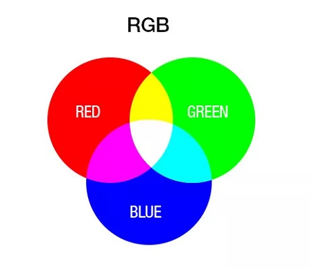
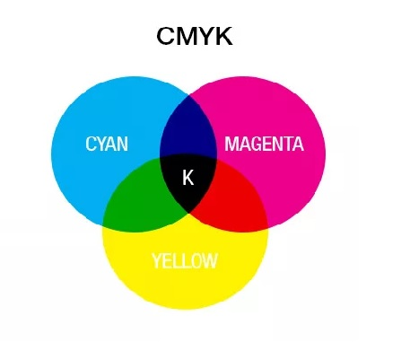
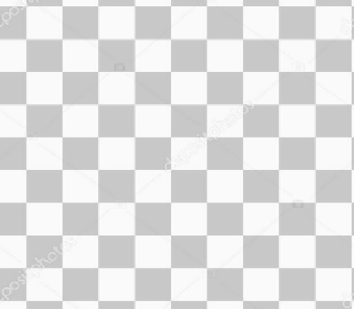

Strona o grafice komputerowej - Modele przestrzeni barw (RGB, CMYK, kanał alfa, HSV)
RGB
RGB (Red Green Blue):
Model RGB opiera się na mieszaninie trzech podstawowych kolorów: czerwonego (Red), zielonego (Green) i niebieskiego (Blue). Każdy kolor w modelu RGB jest reprezentowany przez wartości intensywności tych trzech składowych. Składowe RGB są dodawane razem, aby utworzyć różne kolory. Model RGB jest powszechnie używany w wyświetlaczach komputerowych, telewizorach, monitorach, aparatach fotograficznych i innych urządzeniach, które emitują światło.

CMYK
CMYK (Cyan Magenta Yellow Black):
Model CMYK opiera się na mieszaninie czterech podstawowych kolorów: cyjanu (Cyan), magenty (Magenta), żółtego (Yellow) i czerni (Black). Model używany w druku, gdzie kolory są tworzone poprzez nakładanie farb lub barwników. Składowe CMYK są odejmowane od białego światła, aby uzyskać odpowiednie kolory. Czarny (Black) jest dodawany, aby uzyskać większą głębię kolorów i oszczędzić na kosztach druku, ponieważ czarny atrament jest tańszy niż mieszanina trzech innych kolorów.

Kanał Alfa
Kanał alfa (Alpha Channel):
Kanał alfa odnosi się do dodatkowego kanału w modelu kolorów, który reprezentuje poziom przezroczystości lub nieprzezroczystości piksela. Wartość kanału alfa określa, jak piksel będzie mieszany z tłem lub innymi pikselami. Kanał alfa jest szczególnie użyteczny przy tworzeniu grafiki trójwymiarowej, efektów specjalnych, animacji i warstw graficznych.

HSV
HSV (Hue Saturation Value):
Model HSV opiera się na trzech właściwościach koloru: barwie (Hue), nasyceniu (Saturation) i wartości (Value). Barwa odnosi się do odcienia koloru, nasycenie określa jego czystość lub intensywność, a wartość odnosi się do jasności. Model HSV jest bardziej intuicyjny dla wielu osób i często stosowany w edytorach graficznych do manipulacji kolorami, takich jak regulacja jasności, nasycenia czy zmiana odcienia.